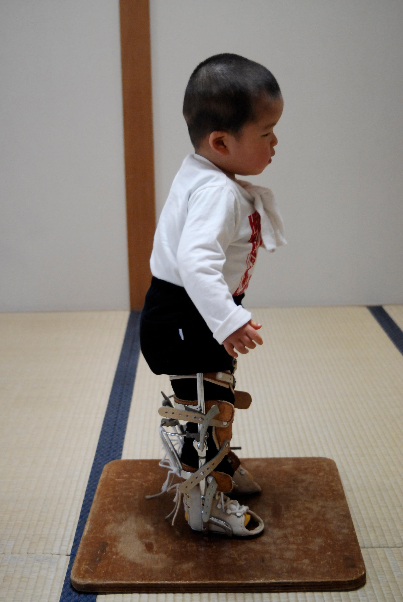
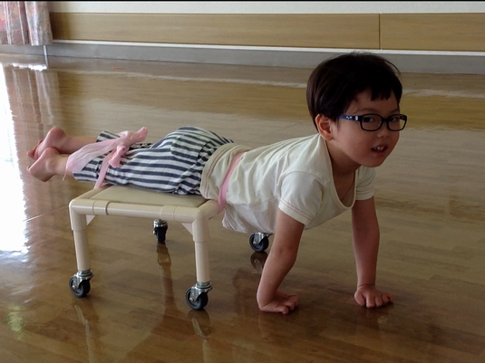
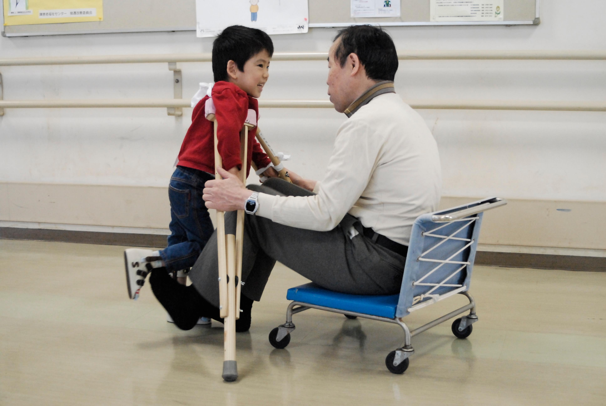

LS-CC松葉杖訓練法
肢体不自由児と共に
renewal 2018年08月01日
公開 2002年11月05日
【
最新のニュース
】 乳児・幼児・小学低学年の子どもで、運動機能に障害が有ったり、運動機能に問題が有る子どもで、保護者が気になったり、悩んでいる内容が有ったならば、相談に応じます。
詳しくはこちら
→→
脳室周囲白質軟化症 （ PeriVentricular Leulomalacia：ＰＶＬ ）
脳性麻痺 （ Cerebral Palsy：CP ）
等の麻痺児や…
水頭症 （ Hydrocephalus ）
二分脊椎症 （ Spina Bifida：Spina ）
や…
知的障害 （ Intellectual Disability：ID ）
等の発達遅滞児まで、いろんな肢体不自由児の運動能力や姿勢の改善のために、どうすれば良いのか記して参ります！
|
スタビライザ
Long leg Standing stabilizer
|
クローラー
Crawling Car
|
松葉杖
腋窩受けがカット
|

|

|

|
・ 肢体不自由児とは…？
原因が不明な肢体不自由、脳や脊髄に原因が明らかな肢体不自由、様々な肢体不自由なお子様を対象に記して参ります。
どの様な原因からの肢体不自由児も、治療対象としている運動療法を紹介いたします。
@ LS-CC松葉杖訓練法とは？
・ ハビリテーション
世では一般に「Rehabilitation」といわれていますが、生まれて経験したことの無い動きや姿勢をこれから習得するのですから「Habilitation」が適切な言い方です。
Habilitationとは…？
ハビリテーションは、子どもが発達しなければならない知識・運動・習慣・決まり事など、生活に必要な知識・治療の全てを指しています。
どのようなことを学ぶこととなるのか？
@ ハビリテーションとは？
・ ここに記すのは運動療法…？
運動療法（Exercise therapy）は、ハビリテーション中の関節可動域回復（維持・保持）訓練、運動回復促進訓練、歩行訓練、筋力増強訓練、心肺機能改善訓練などが含まれています。
身体の一部や全身を動かすことによって、姿勢の改善や動きの改善、生活習慣病の治療体操として用いられています。
@ 運動療法とは？
・ 子どもに運動療法は何時ころから開始するのか…？
麻痺や発達の遅れが見つかったならば、できるだけ早く運動療法を開始することによって不自由な状態を軽減したり改善することができます。
@ さんぽ道
・ 挿し絵入りで訓練の紹介を…！
身体の不自由な子どもや大人が、引き起こした事件や訓練風景を挿し絵入りで…
@ 児鹿先生とお手伝いする道具たち
・ 受けている療育機関や病院での肢体不自由児の治療に不満を感じる保護者の方々が、LS-CC松葉杖訓練法を我が子に受けさせたいと願い、保護者の方々が自ら開く訓練会に加入された子どもの指導結果と途中経過の報告です。
@ さんぽ道 その２
・ LS-CC松葉杖訓練法を体験された子どもの保護者から届いた便りです。
体験された方が、どの様に感じられたのか、成果や効果をどの様に評価されているのか？
@ お便り紹介
・ 問い合わせにお答えいたします。
@ 疑問などにお答えいたします
・ このページで、このサイド上に記した子どもの報告を元に、私のまとめた仮説や推論を記して参ります。
@ 論文・仮説・推論
・ LS-CC松葉杖訓練法からの連絡
@ information
この記事の情報及びこの情報を用いて行う利用者の判断について、正確性、完全性、有益性、特定目的への適合性、その他一切について責任を負うものではありません。この記事の情報を用いて行う行動に関する判断・決定は、利用者ご自身の責任において行っていただきますようお願いいたします。
正確性、完全性、有益性については自信を持って推薦したいのですが、動きや姿勢を文字で表しているために、読まれる方と書いた者との間に、誤差や誤解を生じる可能性があるからです。
どのようなお問い合わせでも・・・アドレス→training@xpost.plala.or.jpにお願いします。trainingをls-ccに書き換えてお願いします。
製作 LS-CC松葉杖訓練法 湯澤廣美